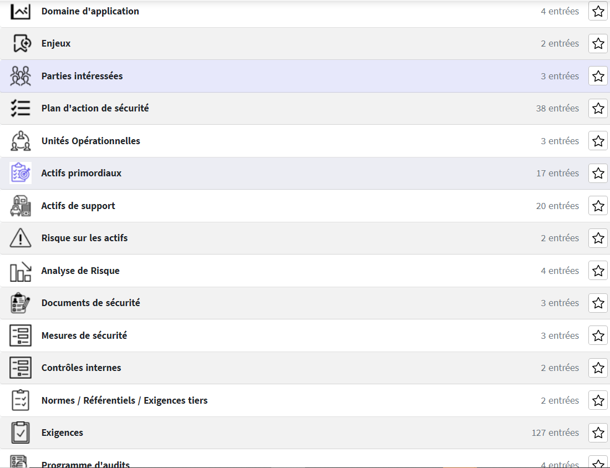

Introduction
Dans le monde numérique d'aujourd'hui, la sécurité des informations est devenue une préoccupation
majeure pour les entreprises de toutes tailles. Avec l'augmentation constante des cyberattaques, il est
plus important que jamais de mettre en place des mesures de sécurité robustes pour protéger les
informations sensibles de l'entreprise. L'un des moyens les plus efficaces de le faire est de mettre en
place un Système de Management de la Sécurité de l'Information (SMSI). Au cours de mon récent travail
avec des entreprises clientes, j'ai eu l'opportunité d'apprendre à comprendre et à mettre en place un
SMSI, une expérience que je souhaite partager dans cet article.
Qu'est-ce qu'un SMSI ?
Un SMSI est un ensemble de politiques, de procédures et de systèmes qui gèrent les risques relatifs à
l'information d'une organisation. Il vise à garantir la confidentialité, l'intégrité et la disponibilité
des informations en appliquant un processus de gestion des risques et en donnant l'assurance aux parties
prenantes d'une entreprise que les risques sont gérés de manière adéquate. La norme internationale
ISO/IEC 27001 sur laquelle j'ai travaillé durant mon stage de formation pour devenir chef de projet ISO
27001 fournit un cadre idéal pour la mise en place et la gestion d'un SMSI.

Comprendre le SMSI
La première étape de mon parcours a été de comprendre en profondeur les différentes composantes d'un SMSI. Cela a été un processus en plusieurs étapes qui s'est étalé sur plusieurs semaines.
1 • Identification des Actifs d'Information :
La première étape de la compréhension d'un SMSI est l'identification des actifs d'information de l'organisation. Les actifs d'information sont toutes les données et les informations que possède une organisation et qui sont cruciales pour son fonctionnement. Cela peut inclure des données clients, des informations financières, des données personnelles, des propriétés intellectuelles, etc. J'ai passé plusieurs jours à travailler avec les entreprises clientes pour identifier tous leurs actifs d'information.2 • Analyse des risques :
Une fois les actifs d'information identifiés, l'étape suivante consiste à évaluer les risques associés à ces actifs. Cela implique d'identifier les menaces potentielles, d'évaluer la vulnérabilité des actifs à ces menaces, et de déterminer l'impact potentiel sur l'organisation si ces menaces se concrétisaient. J'ai passé plusieurs semaines à travailler sur cette étape, en utilisant des outils d'évaluation des risques et en collaborant avec les équipes de sécurité des entreprises clientes.3 • Mise en Place de Procédures de Gestion :
Enfin, il est important de mettre en place des procédures de gestion pour surveiller et gérer le SMSI en continu. Cela inclut des procédures pour la surveillance des incidents de sécurité, la réponse aux incidents, et la révision et la mise à jour régulières du SMSI. J'ai passé plusieurs jours à travailler sur cette étape, en élaborant des procédures de gestion et en formant le personnel des entreprises clientes sur leur utilisation.
Mise en place d'un SMSI pour les entreprises clientes
J'ai ensuite pu mettre en place un SMSI pour une entreprise cliente, ce qui implique plusieurs étapes clés :
Etape 1 : Analyse des Risques :
• La première étape consiste à identifier les actifs d'information de l'entreprise, évaluer les risques associés à ces actifs, et déterminer l'impact que ces risques pourraient avoir sur l'entreprise.Etape 2 : Sélection des Contrôles :
• Une fois les risques identifiés, l'étape suivante consiste à sélectionner les contrôles appropriés pour gérer ces risques. Les contrôles peuvent être de nature préventive, détective ou corrective.
Etape 3 : Implémentation des Contrôles :
• Les contrôles sélectionnés doivent ensuite être mis en place. Cela peut impliquer des changements dans les processus de l'entreprise, la mise en place de nouvelles technologies, ou la formation du personnel.
Etape 4 : Surveillance et Revue :
• Une fois le SMSI mis en place, il est important de le surveiller et de le réviser régulièrement pour s'assurer qu'il reste efficace face aux nouvelles menaces.